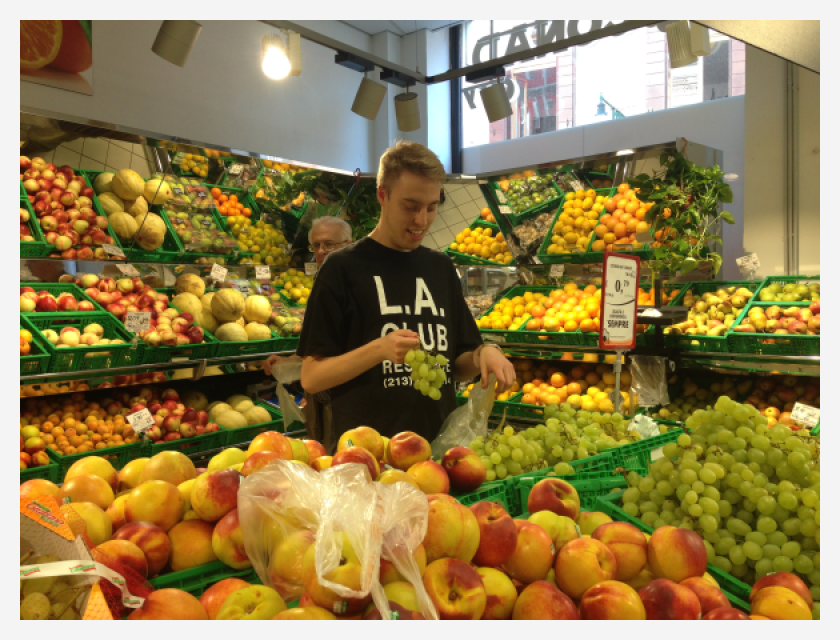

Analyst / R Developer at Transport for London (not the trains bit - the roads, walking, cycling, environment and road safety bit). Trying to understand how cities work, and making them work a bit better for everyone in the process.
Interested in sharing and supporting opinionated analysis and humane, ethical applications of machine learning.
With the rest of the time, I buy/play dusty records and watch The Breakfast Club (the radio one) and Hot 97 a bit too much.
